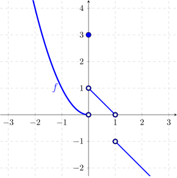
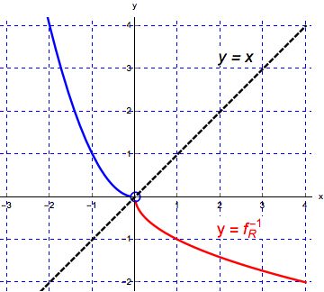
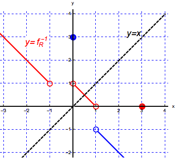

We’re given the following graph of a function:

Use this graph to answer the following questions:
- (a)
- What is the domain of this function?
- (b)
- What is the range of this function?
- (c)
- What is the value of \(f(0)\), \(f(1)\), and \(f(2)\)?
- (d)
- Does this function have an inverse? (Why or why not?)
- (e)
- Find at least two intervals on which the function is one-to-one.
- (f)
- Find \(f^{-1}(3)\) on a restricted domain of \(f\). In this case restrict the domain of \(f\) to \([0, 1)\cup (1,\infty )\). By definition we have \(f^{-1}(3) = y \iff 3 = f(y)\). Looking at the second graph of the restricted function we see that \(f(0) = 3\), that is, \(f^{-1}(3) = 0\).
(If we restrict the domain of \(f\) to \((-\infty , 0)\), then \(f^{-1}(3) = y \iff 3 = f(y)\) implies that \(f(-1.7) \approx 3\). Hence \(-1.7 \approx f^{-1}(3)\).)
- (g)
- Using the restricted domain for \(f\) of \((-\infty ,0)\), sketch a graph of \(f^{-1}\). To graph the inverse, we can think of the graph being reflected over the line \(y=x\). Another way to obtain the graph is to remember than if \((x,y)\) is a point on the graph of \(f\), then \((y,x)\) is a point on the graph of \(f^{-1}\). For example, \((-1,1)\) is on the graph of \(f\) so \((1,-1)\) is on the graph of \(f^{-1}\).

- (h)
- Using the restricted domain for \(f\) of \([0,1)\cup (1,\infty )\), sketch a graph of \(f^{-1}\). We can graph the inverse of \(f\), when restricted to \([0,1)\cup (1,\infty )\), in pieces from left to right. Since \((0,3)\) is a point on the graph of \(f\), the point \((3,0)\) in on the graph of \(f^{-1}\). Then, we see on the graph of \(f\), there is a linear piece going from \((0,1)\) to \((1,0)\). When we imagine reflecting this part of the graph of \(f\) over the line \(y=x\), it reflects onto itself. The last piece of the graph of \(f\) is a line from \((1,-1)\) which appears to also contain the point \((-2,2)\). Reflecting this part of \(f\) over the line \(y=x\), we obtain a line starting at \((-1,1)\) and through the point \((-2,2)\).
